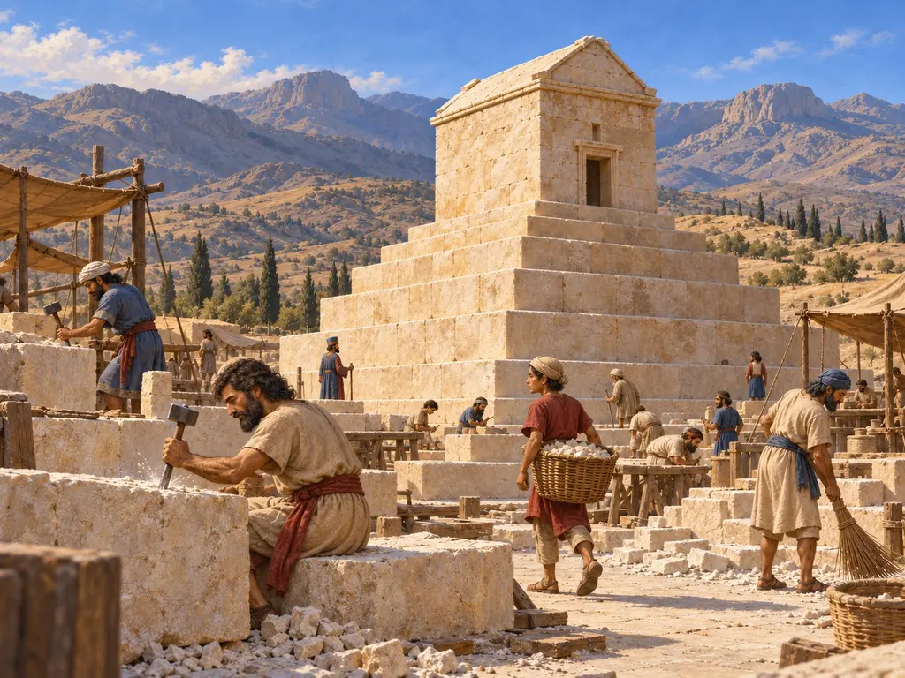
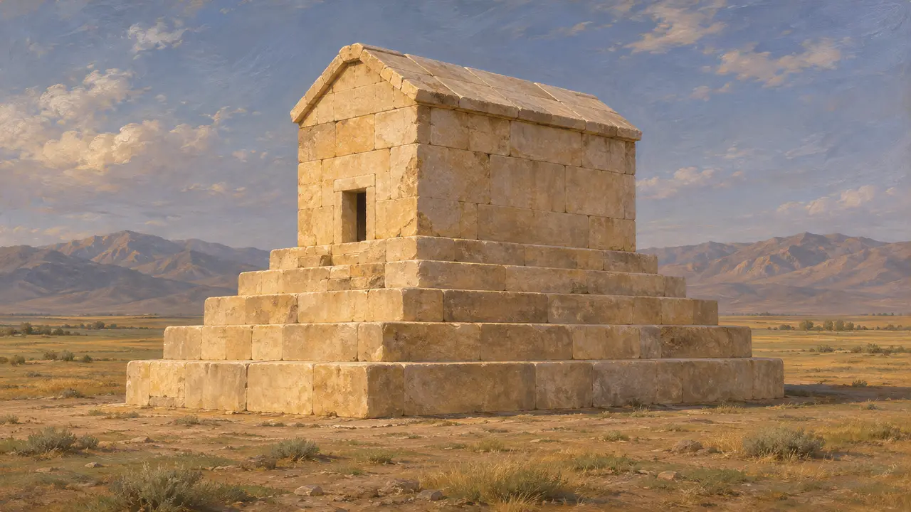
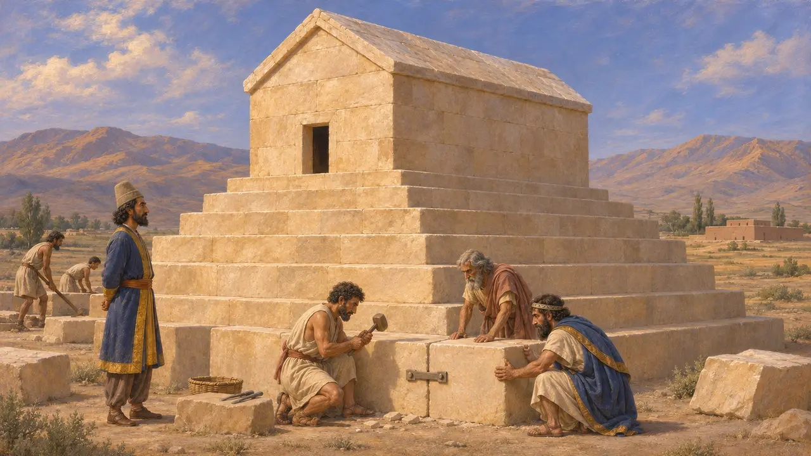
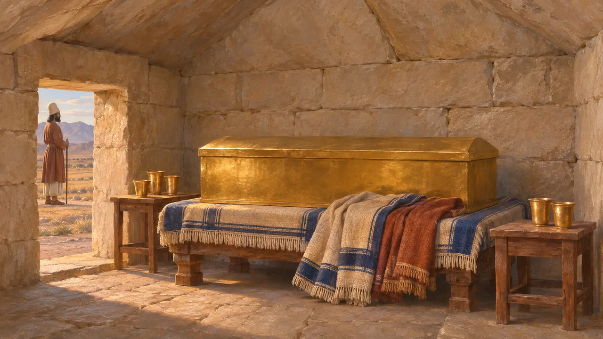
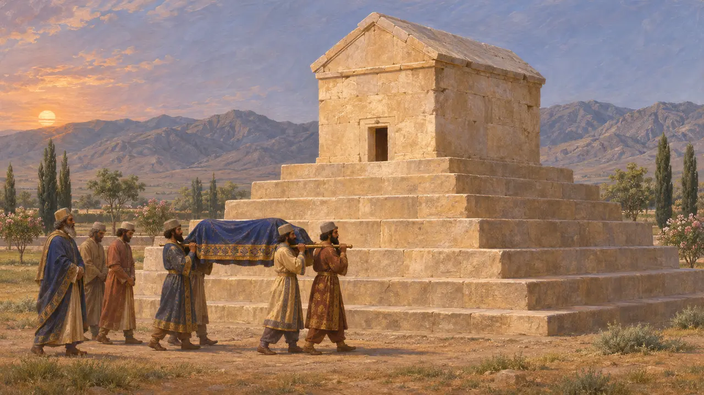
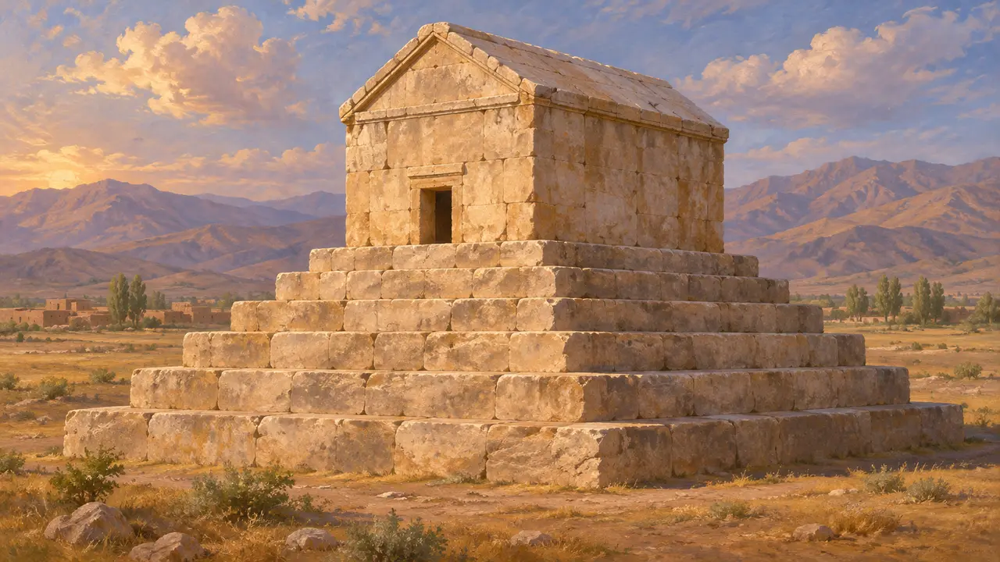

Kyros'un Mezarı
Büyük Kyros'un Pasargadai'deki beşik çatılı taş mezarı, Persis, yaklaşık MÖ 540-530
Oyunda: Bölüm 1: Kurucunun Mezarı
Kyros'un Mezarı, Kyros'un Persis'te kurduğu kent olan Pasargadai ovasında, yüksek ve basamaklı bir kaide üzerinde duran, beşik çatılı küçük bir taş odadır. Aleksandros'la birlikte gelen ve Arrianos ile Strabon'un aktardığı yazarlar, mezarın kralın cesedini altın bir tabut içinde barındırdığını ve Magoslarca korunduğunu söyler. Mezar hâlâ ayaktadır ve erken Pers imparatorluğunun en iyi korunmuş yapılarından biridir.
Oyunda: Oyunda Kyros mezarın yapımını 530'da buyurur ve taşçılar onu kireçtaşı bloklardan taş taş örer. Bu buyruk dramatize edilmiş bir sahnedir. Mezarı Kyros'un bizzat mı yaptırdığı, yoksa ölümünden sonra mı tamamlandığı bilinmemektedir.

Ovadaki yapı
BelgelerdeMezar, açık renkli kireçtaşından yaklaşık 11 metre yükselir. Altı basamaklı bir kaide, alçak ve dar bir kapıdan girilen, üstü beşik biçimli taş bir çatıyla örtülü, yaklaşık 3'e 2 metrelik tek bir odayı taşır. Bloklar çok büyüktür ve metal kenetlerle birbirine tutturulmuştur; bu kenetlerin çoğu sonradan soyguncular tarafından sökülmüştür. David Stronach'ın 1961-63 yıllarındaki kazıları mezarı ve çevresini ayrıntılı biçimde incelemiştir.
D. Stronach, Pasargadae, 1978

Kim inşa etti, tasarım nereden geldi
Tartışmalıİnce derzler ve kenet işçiliği Lidya ve İonia taş tekniklerine uyar; pek çok akademisyen, Kyros o şehri aldıktan sonra Sardesli ustaların burada çalıştığını düşünür. Basamaklı kaide ve beşik çatılı oda; Lidya mezarları, Mezopotamya ve Elam basamaklı platformları ve İran yaylalarının beşik çatılı evleriyle karşılaştırılmıştır, ancak tek bir model üzerinde uzlaşı yoktur. Çoğu akademisyen yapıyı Kyros'un son yıllarına tarihlendirir, ama Kambyses döneminde tamamlanmış olabilir.
D. Stronach, Pasargadae, 1978; P. Briant, From Cyrus to Alexander, 2002

Aleksandros'un adamlarının buldukları
Antik anlatıAristobulos'a dayanan Arrianos'a göre mezar odasında altın bir tabut, bir sedir, masalar, kupalar ve ince giysiler vardı; bir yazıt da Kyros'un adını veriyordu. Arrianos, Kambyses zamanından beri mezarı Magosların koruduğunu, Kyros'a kurban etmek için günde bir koyun ve her ay bir at aldıklarını söyler. Aleksandros yaklaşık 324'te Hindistan'dan döndüğünde mezarı yağmalanmış buldu ve Aristobulos'a onarttı. Strabon ve Plutarkhos da soygundan ve yazıttan söz eder.
Arrian, Anabasis 6.29; Strabo, Geography 15.3.7; Plutarch, Alexander 69

Kyros nasıl öldü ve buraya nasıl gömüldü
TartışmalıKyros 530'da öldü ve antik yazarlar nasıl öldüğü konusunda hemfikir değildir. Herodotos onun Massagetlerle savaşırken düştüğünü söyler ve kendi anlatısının birçok anlatıdan yalnızca biri olduğunu kabul eder. Ktesias, Derbiklerle yapılan bir savaştan sonra aldığı yaralardan öldüğünü ve cesedinin Pers diyarına gönderildiğini söylerken, Ksenophon onu yatağında huzur içinde ölmüş olarak anlatır. Mezarın üzerinde hiçbir yazıt günümüze ulaşmamıştır, ancak akademisyenlerin neredeyse tamamı mezarın ona ait olduğunu kabul eder.
Herodotus 1.214; Ctesias, Persica; Xenophon, Cyropaedia 8.7

Tomyris'in intikamı ve Süleyman'ın annesi
Geç dönem efsanesiHerodotos, Massagetlerin kraliçesi Tomyris'in ölü kralın başını kanla dolu bir tuluma daldırdığına dair bir öykü aktarır; bu öykü bir haberden çok ahlaki bir ders olarak kurgulanmıştır. Orta Çağ'da yerel gelenek yapıyı Süleyman'ın annesinin mezarı olarak adlandırmış, çevresine yıkık saraylardan alınmış sütunlarla küçük bir cami inşa edilmişti. 19. yüzyıl başlarının gezginleri daha sonra yapıyı Arrianos'un betimlemesiyle eşleştirdi.
Herodotus 1.214; D. Stronach, Pasargadae, 1978
Kaynaklar
- Arrian, Anabasis 6.29
- D. Stronach, Pasargadae, 1978
- Strabo, Geography 15.3.7
- Plutarch, Alexander 69
- Herodotus 1.214
- P. Briant, From Cyrus to Alexander, 2002